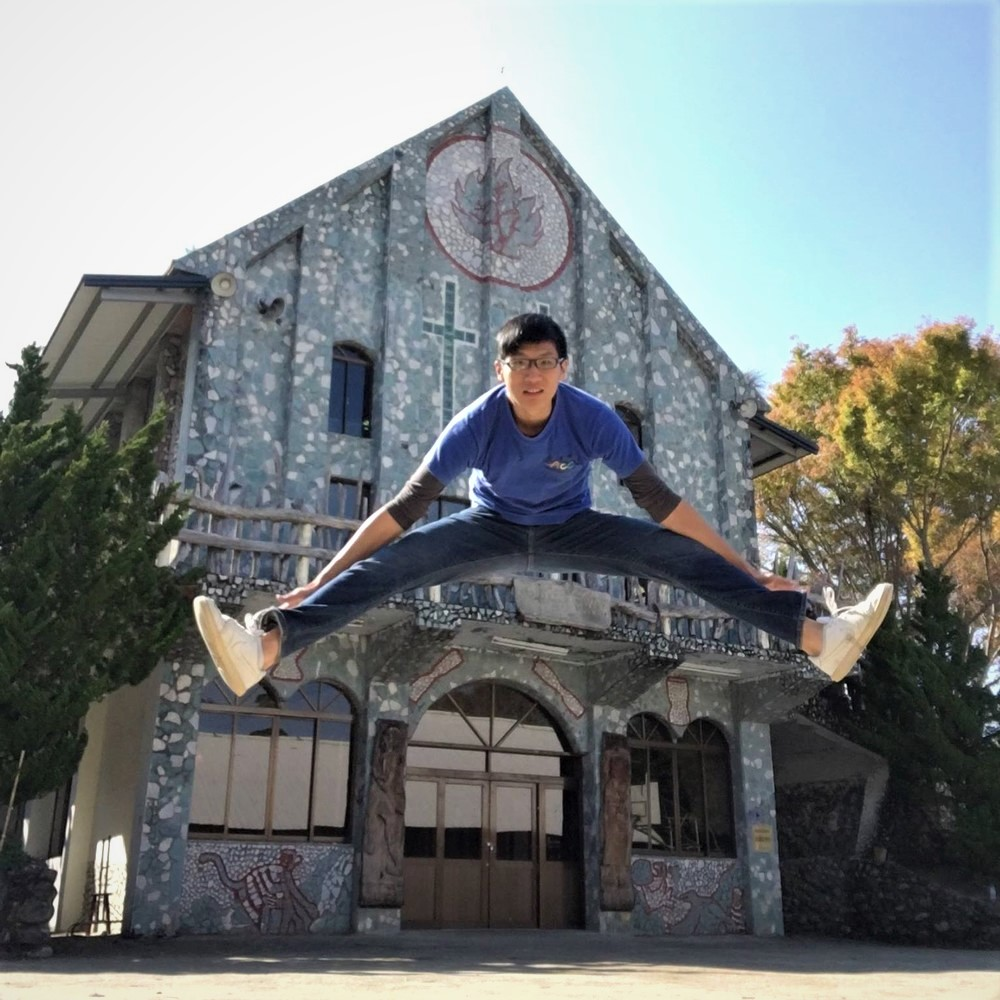

公司職員簡介
姓名 : 鍾淳鎰
職稱 : 2016劇二負責人、2017冬令營微電影股長
入社年份 : 2015-2017
特殊表現 : 佑銓破壞者、劇二拳王、公然要求股員遲到吃腳毛之重犯
員工表現

琪鑒
謝謝你每次見到我都說我很漂亮，很想揍你但我在心中知道打不過你，畢業快樂！！祝你去台大一切順利、吃得又圓又胖！
哲儀
謝謝你在茫茫人海中，選出了我進入微電影，雖然一直說我男主演的很爛((雖然確實是沒有非常理想，但還是謝謝你帶給我大一的美好回憶，祝你研究所過的開開心心，研究不卡卡!
硬魚
拍片好組員外加台大學霸，和你一起上課老實說還蠻好玩的哈哈哈你總是會講一堆543但又很好笑的東西，雖然你長得很壞的其實是面惡心善，畢業快樂哩去台大好好玩！
匿名
謝謝你擔任微電影的導演兼演員，只要想不到梗就請你上鏡頭。還傳承了會做事但又混分的帶營隊精神。恭喜你能回台北念書了~
妤
一切順利喲( • ̀ω•́ )
匿名
新光最愛sham
斈恩
剛進原文的時候承蒙你照顧了(認真的)，你是個很棒很幽默又很可靠的人。雖然現在沒有那麼熟了，但真的衷心希望畢業之後不管你去哪裡都能順順利利！畢業快樂！